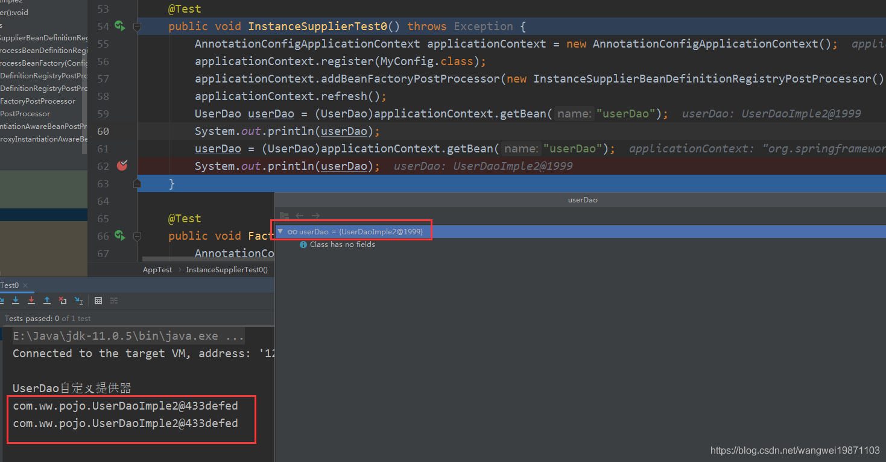
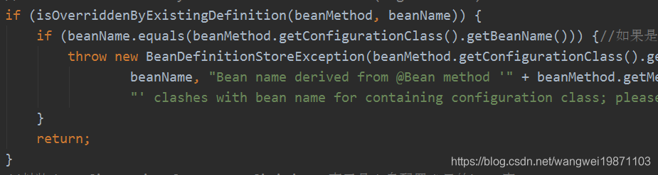
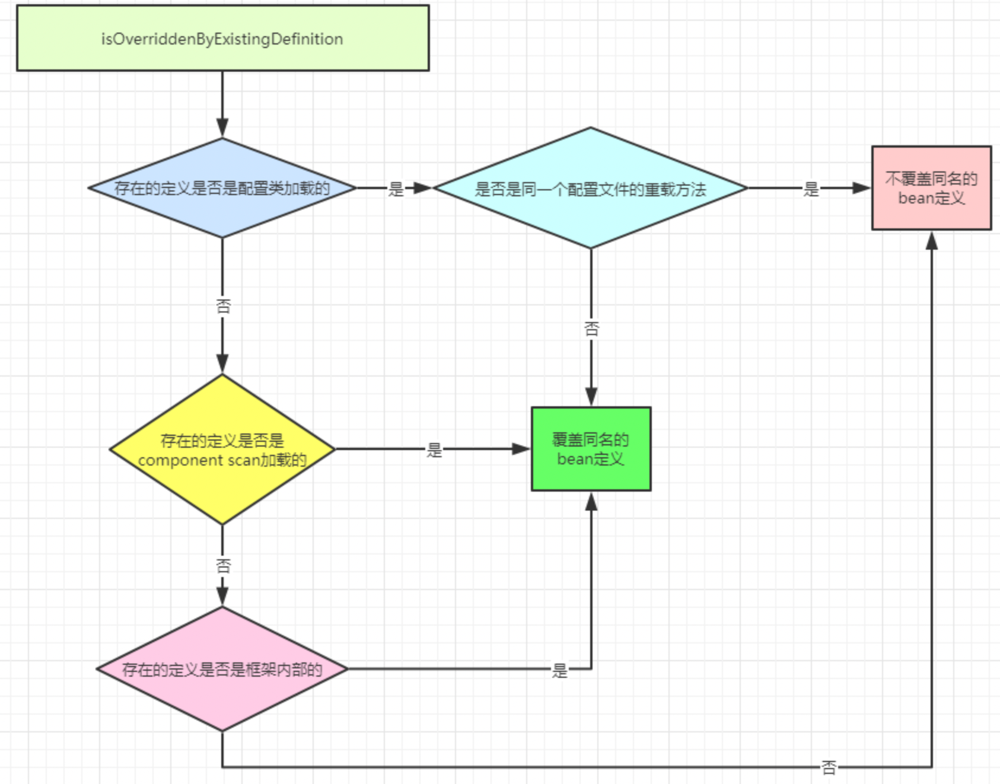
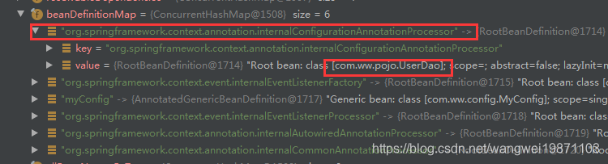
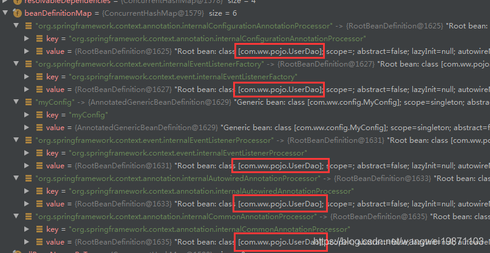
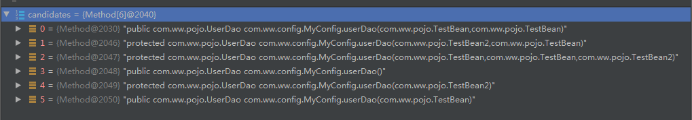
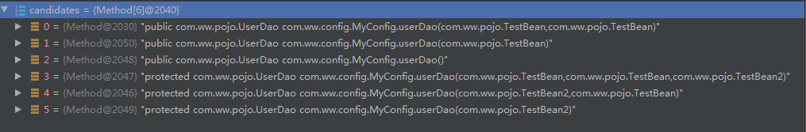
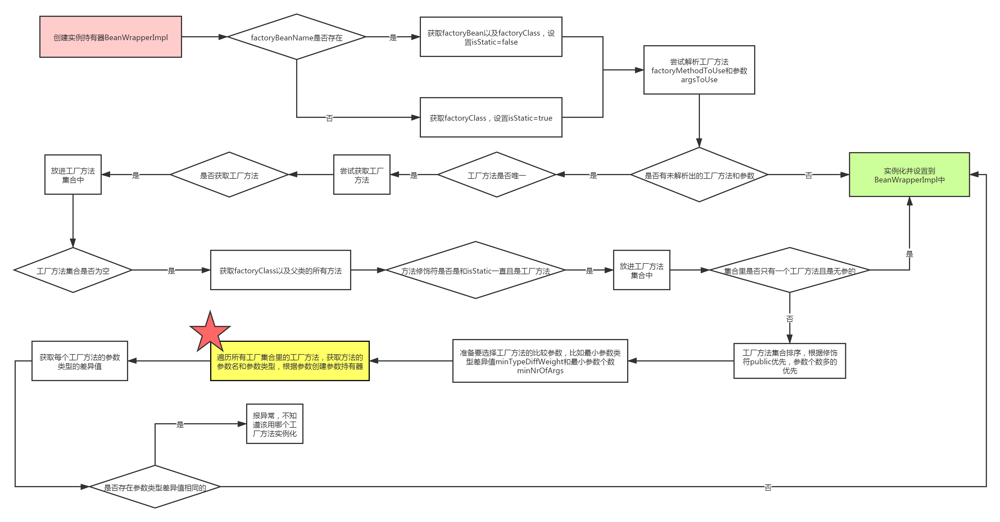
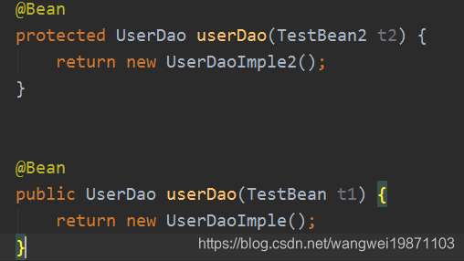
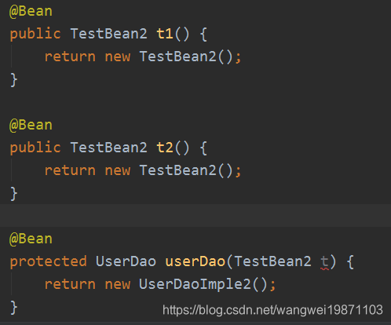

finishBeanFactoryInitialization详解3-doCreateBean1
一、介绍
getBean中的核心源码部分，创建Bean，单独的搞个文章查看。
源码位置
org.springframework.beans.factory.support.AbstractAutowireCapableBeanFactory#doCreateBean创建Bean。
1protected Object createBean(String beanName, RootBeanDefinition mbd, Object[] args)3 throws BeanCreationException {4 ...5 Object beanInstance = doCreateBean(beanName, mbdToUse, args);6 ...7}创建源码
这个方法也很复杂，我们慢慢来看。首先会先获取缓存，如果没获取到就创建一个实例，这个实例是BeanWrapper 包装类型的，然后进行处理器处理applyMergedBeanDefinitionPostProcessors，如果需要解决循环引用就要添加到一个单例工厂里，然后进行属性的填充，初始化，注册销毁回调，最后返回。中间的每一个过程都很复杂，我们慢慢说吧。
x1protected Object doCreateBean(final String beanName, final RootBeanDefinition mbd, final Object[] args)2 throws BeanCreationException {3
4
5 BeanWrapper instanceWrapper = null;6 //获取factoryBean实例缓存7 if (mbd.isSingleton()) {8 instanceWrapper = this.factoryBeanInstanceCache.remove(beanName);9 }10 11 //没有即创建实例12 if (instanceWrapper == null) {13 14 // ---看第1-3步---15 instanceWrapper = createBeanInstance(beanName, mbd, args);16 // ---end---17 }18 19 //获取原始bean20 final Object bean = instanceWrapper.getWrappedInstance();21 Class<?> beanType = instanceWrapper.getWrappedClass();22 23 //不为空的bean24 if (beanType != NullBean.class) {25 mbd.resolvedTargetType = beanType;26 }27 28 // ---看《doCreateBean3》---29 //处理器修改合并bean定义30 synchronized (mbd.postProcessingLock) {31 if (!mbd.postProcessed) {32 try {33 applyMergedBeanDefinitionPostProcessors(mbd, beanType, beanName);34 }35 catch (Throwable ex) {36 ...37 }38 mbd.postProcessed = true;39 }40 }41 42 //暴露早期的单例，处理循环引用43 boolean earlySingletonExposure = (mbd.isSingleton() && this.allowCircularReferences &&44 isSingletonCurrentlyInCreation(beanName));45 if (earlySingletonExposure) {46 ...47 addSingletonFactory(beanName, () -> getEarlyBeanReference(beanName, mbd, bean));//添加一个单例工厂方法48 }49 50 //进行初始化51 // Initialize the bean instance.52 Object exposedObject = bean;53 try {54 populateBean(beanName, mbd, instanceWrapper);55 exposedObject = initializeBean(beanName, exposedObject, mbd);56 }57 catch (Throwable ex) {58 ...59 }60
61 if (earlySingletonExposure) {62 Object earlySingletonReference = getSingleton(beanName, false);63 if (earlySingletonReference != null) {64 if (exposedObject == bean) {65 exposedObject = earlySingletonReference;66 }67 else if (!this.allowRawInjectionDespiteWrapping && hasDependentBean(beanName)) {68 String[] dependentBeans = getDependentBeans(beanName);69 Set<String> actualDependentBeans = new LinkedHashSet<>(dependentBeans.length);70 for (String dependentBean : dependentBeans) {71 if (!removeSingletonIfCreatedForTypeCheckOnly(dependentBean)) {72 actualDependentBeans.add(dependentBean);73 }74 }75 if (!actualDependentBeans.isEmpty()) {76 throw new BeanCurrentlyInCreationException...77 }78 }79 }80 }81
82 // Register bean as disposable.83 try {84 85 //注册可销毁的bean86 registerDisposableBeanIfNecessary(beanName, bean, mbd);87 }88 catch (BeanDefinitionValidationException ex) {89 ...90 }91 //---end---92 93 return exposedObject;94 }实例化源代码（重点）
创建bean实例，首先获取类型，然后获取修饰符，只有public才允许创建，然后在获取自定义的实例提供器，如果有的话直接获取返回，没有的话如果发现有工厂方法名字，就用工厂方法创建，否则的话就要去判断构造函数了，找出合适的构造函数进行自动装配，否则就用默认的构造函数实例化。
771protected BeanWrapper createBeanInstance(String beanName, RootBeanDefinition mbd, Object[] args) {2 // Make sure bean class is actually resolved at this point.3 Class<?> beanClass = resolveBeanClass(mbd, beanName);4 5 //检查是public修饰的6 if (beanClass != null && !Modifier.isPublic(beanClass.getModifiers()) && !mbd.isNonPublicAccessAllowed()) {7 throw new BeanCreationException(mbd.getResourceDescription(), beanName,8 "Bean class isn't public, and non-public access not allowed: " + beanClass.getName());9 }10 11 //扩展的实例提供器，可以直接从里面获取实例12 Supplier<?> instanceSupplier = mbd.getInstanceSupplier();13 if (instanceSupplier != null) {14 15 // ---看2-1步--- 实例提供器实例化16 return obtainFromSupplier(instanceSupplier, beanName);17 // ---end---18 }19 20 // ---看2-2步--- 工厂方法实例化21 //有工厂方法名的，通过工厂方法获取22 if (mbd.getFactoryMethodName() != null) {23 return instantiateUsingFactoryMethod(beanName, mbd, args);24 }25 // ---end---26
27 //标记下，防止重复创建同一个bean28 // Shortcut when re-creating the same bean...29 boolean resolved = false;30 31 //是否需要自动装配，构造器有参数的需要32 boolean autowireNecessary = false;33 34 //无参35 if (args == null) {36 synchronized (mbd.constructorArgumentLock) {37 //有解析的构造器或者工厂方法38 if (mbd.resolvedConstructorOrFactoryMethod != null) {39 resolved = true;40 autowireNecessary = mbd.constructorArgumentsResolved;41 }42 }43 }44 45 //有构造参数的或者工厂方法46 if (resolved) {47 48 //构造器有参数的49 if (autowireNecessary) {50 return autowireConstructor(beanName, mbd, null, null);51 52 //无参的53 } else {54 return instantiateBean(beanName, mbd);55 }56 }57 58 // ---看《doCreateBean2》--- 通过构造器实例化59 //从bean后置处理器中为自动装配寻找构造方法60 Constructor<?>[] ctors = determineConstructorsFromBeanPostProcessors(beanClass, beanName);61 if (ctors != null || mbd.getResolvedAutowireMode() == AUTOWIRE_CONSTRUCTOR ||62 mbd.hasConstructorArgumentValues() || !ObjectUtils.isEmpty(args)) {63 return autowireConstructor(beanName, mbd, ctors, args);64 }65 // ---end---66 67 // 找出最合适的默认构造方法68 ctors = mbd.getPreferredConstructors();69 if (ctors != null) {70 return autowireConstructor(beanName, mbd, ctors, null);71 }72 73 // ---看《doCreateBean2》--- 74 // 最使用默认构造器实例化Bean75 return instantiateBean(beanName, mbd);76 // ---end---77}二、createBeanInstance
obtainFromSupplier
实例提供器，这个主要是我们自己扩展的，我们先来看他里面怎么做的，然后我实战一个就可以啦。主要就是从给定的提供器里的get()方法获取bean实例，然后包装成BeanWrapper类型，再进行initBeanWrapper初始化。
271protected BeanWrapper obtainFromSupplier(Supplier<?> instanceSupplier, String beanName) {2 Object instance;3
4 String outerBean = this.currentlyCreatedBean.get();5 this.currentlyCreatedBean.set(beanName);6 try {7 instance = instanceSupplier.get();8 }9 10 finally {11 //不为空还是这是老的12 if (outerBean != null) {13 this.currentlyCreatedBean.set(outerBean);14 }15 //为空删除16 else {17 this.currentlyCreatedBean.remove();18 }19 }20
21 if (instance == null) {22 instance = new NullBean();23 }24 BeanWrapper bw = new BeanWrapperImpl(instance);25 initBeanWrapper(bw);26 return bw;27}instanceSupplier实战扩展点
InstanceSupplierBeanDefinitionRegistryPostProcessor，先创建后置处理器，里面注册一个
bean定义和实例提供器，提供一个UserDaoImple2，名字是userDao要跟MyConfig中的方法名字一样，可以叫做 处理器添加方式 。
141public class InstanceSupplierBeanDefinitionRegistryPostProcessor implements BeanDefinitionRegistryPostProcessor {2 3 public void postProcessBeanDefinitionRegistry(BeanDefinitionRegistry registry) throws BeansException {4 registry.registerBeanDefinition("userDao",new RootBeanDefinition(UserDao.class, () -> {5 System.out.println("UserDao自定义提供器");6 return new UserDaoImple2();7 }));8 }9
10 11 public void postProcessBeanFactory(ConfigurableListableBeanFactory beanFactory) throws BeansException {12
13 }14}UserDaoImple2
71public class UserDaoImple2 implements UserDao {2 3 public void getUser() {4 System.out.println("UserDaoImple2 getUser");5 }6
7}MyConfig
71public class MyConfig {3 4 public UserDao userDao(){5 return new UserDaoImple();6 }7}测试
111 2 public void InstanceSupplierTest0() throws Exception {3 AnnotationConfigApplicationContext applicationContext = new AnnotationConfigApplicationContext();4 applicationContext.register(MyConfig.class);5 applicationContext.addBeanFactoryPostProcessor(new InstanceSupplierBeanDefinitionRegistryPostProcessor());6 applicationContext.refresh();7 UserDao userDao = (UserDao)applicationContext.getBean("userDao");8 System.out.println(userDao);9 userDao = (UserDao)applicationContext.getBean("userDao");10 System.out.println(userDao);11 }
这个是怎么回事呢，有了提供器后我们MyConfig里的方法不起作用啦？是的，其实是bean定义被覆盖了，还记得前面讲的，配置类处理器会对MyConfig进行解析，验证，然后加载bean定义，在加载bean定义的里面，有个isOverriddenByExistingDefinition方法，可以判断是否要覆盖现有的bean定义，因为我们自定义的提供器在最开始的时候就已经注册了bean定义，所以在MyConfig的userDao方法加载的时候就会进行判断，看是否要进行覆盖，如果不覆盖就直接返回了，所以我们MyConfig里的方法信息压根就没注册进bean定义：

主要的判断代码就是ConfigurationClassBeanDefinitionReader的isOverriddenByExistingDefinition，其实是有个判断逻辑，首先是判断已存在的bean定义是不是和bean注册方法同一个配置类的重载方法，因为同名嘛，如果是的话就不覆盖，且设置工厂方法不唯一，否则要覆盖，如果不是，就看是不是component scan扫描进来的bean定义，是的话要覆盖，如果不是就看是不是内部的，如果是也覆盖，这么说我们可以覆盖spring内部的处理器啦：
331protected boolean isOverriddenByExistingDefinition(BeanMethod beanMethod, String beanName) {2 if (!this.registry.containsBeanDefinition(beanName)) {3 return false;4 }5 BeanDefinition existingBeanDef = this.registry.getBeanDefinition(beanName);6 //如果是ConfigurationClassBeanDefinition类型的话，且是同一个配置类的重载方法，就保存现有7 if (existingBeanDef instanceof ConfigurationClassBeanDefinition) {8 ConfigurationClassBeanDefinition ccbd = (ConfigurationClassBeanDefinition) existingBeanDef;9 if (ccbd.getMetadata().getClassName().equals(10 beanMethod.getConfigurationClass().getMetadata().getClassName())) {11 if (ccbd.getFactoryMethodMetadata().getMethodName().equals(ccbd.getFactoryMethodName())) {12 ccbd.setNonUniqueFactoryMethodName(ccbd.getFactoryMethodMetadata().getMethodName());//设置工厂方法不唯一，说明有重载13 }14 //不覆盖15 return true;16 }17 else {18 return false;//覆盖19 }20 }21 //如果是component scan， 覆盖现有的22 if (existingBeanDef instanceof ScannedGenericBeanDefinition) {23 return false;24 }25 //如果是框架内部的，覆盖现有的26
27 if (existingBeanDef.getRole() > BeanDefinition.ROLE_APPLICATION) {28 return false;29 }30
31 //不覆盖32 return true;33}
来看下把spring内部的默认的配置类处理器改了之后会怎么样吧，如果改了就不会有配置处理器处理了，MyConfig里的bean定义也不会有了：

不得不说spring真的很灵活，扩展性很好，你甚至可以改变内部的处理器，你可以自定义处理器来处理，比如我把初始化的处理器全部覆盖了，现在初始化我说了算，这个扩展性真的很强啊：

instantiateUsingFactoryMethod
工厂方法实例化，先要获取构造器解析器，然后用工厂方法进行实例化。
71protected BeanWrapper instantiateUsingFactoryMethod(2 String beanName, RootBeanDefinition mbd, Object[] explicitArgs) {3 4 // ---看2-3步（重点）---5 return new ConstructorResolver(this).instantiateUsingFactoryMethod(beanName, mbd, explicitArgs);6 // ---end---7}ConstructorResolver：里面没啥逻辑，主要是保存
beanFactory。
41public ConstructorResolver(AbstractAutowireCapableBeanFactory beanFactory) {2 this.beanFactory = beanFactory;3 this.logger = beanFactory.getLogger();4}instantiateUsingFactoryMethod
使用工厂方法进行实例化。
这个方法很核心，他会根据工厂方法的是不是唯一来进行创建，如果唯一，就直接创建，不唯一的话还要进行所有方法获取，然后选出工厂方法，再处理，我们先讲简单的情况吧。
第一段：先创建一个实例持有器，其实就是个包装类，然后从
RootBeanDefinition中获取factoryBeanName，也就工厂方法，比如说bean注解的方法就是，如果存在判断下是不是要创建自身，会报错，创建自身等于无限循环创建了。如果不是的话就获取factoryBean即工厂实例，获取工厂类型，设置非静态的。如果获取不到工厂实例，说明是静态方法。第二段：真正创建的方法，准备好参数，尝试获取已经解析的数据，第一次都是空的。
第三段：如果没解析过，就获取
factoryClass的用户定义类型，因为此时factoryClass可能是CGLIB动态代理类型，所以要获取用父类的类型。如果工厂方法是唯一的，就是没重载的，就获取解析的工厂方法，如果不为空，就添加到一个不可变列表里，如果为空的话，就要去 找出factoryClass的以及父类的所有的方法， 进一步 找出方法修饰符一致且名字跟工厂方法名字相同的且是bean注解的方法 ，并放入列表里。第四段：重点，多个有参工厂方法，来创建Bean实例。
2851public BeanWrapper instantiateUsingFactoryMethod(2 String beanName, RootBeanDefinition mbd, Object[] explicitArgs) {3 4 // ---第一段 初始化---5 // 实例持有器6 BeanWrapperImpl bw = new BeanWrapperImpl();7 this.beanFactory.initBeanWrapper(bw);8
9 // 工厂实例10 Object factoryBean;11 // 工厂类型12 Class<?> factoryClass;13 14 // 是否是静态的,存在factoryBeanName表示是实例工厂，非静态方法，否则是静态的15 boolean isStatic;16
17 // factoryBeanName，也就是工厂方法所属的类的简单名字，比如配置类，这里的factoryBean，不是FactoryBean接口18 String factoryBeanName = mbd.getFactoryBeanName();19 20 // 存在factoryBean21 if (factoryBeanName != null) {22 // factoryBean创建出来的是工厂自身，会报异常，这样貌似等于无限递归创建了23 if (factoryBeanName.equals(beanName)) {24 throw new BeanDefinitionStoreException(mbd.getResourceDescription(), beanName,25 "factory-bean reference points back to the same bean definition");26 }27 28 // 获得factoryBean29 factoryBean = this.beanFactory.getBean(factoryBeanName);30 31 // 已经创建了32 if (mbd.isSingleton() && this.beanFactory.containsSingleton(beanName)) {33 throw new ImplicitlyAppearedSingletonException();34 }35 factoryClass = factoryBean.getClass();36 37 // 非静态的38 isStatic = false;39 }40 41 // 静态的方法，无factoryBean实例42 else {43 // It's a static factory method on the bean class.44 if (!mbd.hasBeanClass()) {45 throw new BeanDefinitionStoreException(mbd.getResourceDescription(), beanName,46 "bean definition declares neither a bean class nor a factory-bean reference");47 }48 factoryBean = null;49 factoryClass = mbd.getBeanClass();50 isStatic = true;51 }52 // ---第一段end---53
54 // ---第二段 准备阶段---55 //准备使用的工厂方法56 Method factoryMethodToUse = null;57 //准备使用的参数包装器58 ArgumentsHolder argsHolderToUse = null;59 //准备使用的参数60 Object[] argsToUse = null;61
62 if (explicitArgs != null) {63 //如果有显示参数就使用这些参数64 argsToUse = explicitArgs;65 }66 else {67 //解析出的参数68 Object[] argsToResolve = null;69 synchronized (mbd.constructorArgumentLock) {70 factoryMethodToUse = (Method) mbd.resolvedConstructorOrFactoryMethod;71 //如果有工厂方法，且构造函数已经解析了72 if (factoryMethodToUse != null && mbd.constructorArgumentsResolved) {73 // Found a cached factory method...74 argsToUse = mbd.resolvedConstructorArguments;75 if (argsToUse == null) {76 argsToResolve = mbd.preparedConstructorArguments;77 }78 }79 }80 if (argsToResolve != null) {81 argsToUse = resolvePreparedArguments(beanName, mbd, bw, factoryMethodToUse, argsToResolve, true);82 }83 }84 // ---第二段end---85
86 // ---第三段 创建阶段---87 if (factoryMethodToUse == null || argsToUse == null) {88 89 // ---看2-3.1步---90 //获取用户定义的类91 // Need to determine the factory method...92 // Try all methods with this name to see if they match the given arguments.93 factoryClass = ClassUtils.getUserClass(factoryClass);94 // ---end---95
96 // ---看2-3.1步---97 //获取factoryClass以及父类的所有方法作为候选的方法98 Method[] rawCandidates = getCandidateMethods(factoryClass, mbd);99 // ---end---100 101 List<Method> candidateList = new ArrayList<>();102 103 for (Method candidate : rawCandidates) {104 //如果没找到工厂方法，可能有重载105 if (Modifier.isStatic(candidate.getModifiers()) == isStatic && mbd.isFactoryMethod(candidate)) {106 candidateList.add(candidate);107 }108 }109 110 //如果只获取到一个方法，且传入的参数为空，且没有设置构造方法参数值111 if (candidateList.size() == 1 && explicitArgs == null && !mbd.hasConstructorArgumentValues()) {112 //获取出来113 Method uniqueCandidate = candidateList.get(0);114 //没参数的话115 if (uniqueCandidate.getParameterCount() == 0) {116 //设置工厂方法117 mbd.factoryMethodToIntrospect = uniqueCandidate;118 synchronized (mbd.constructorArgumentLock) {119 //设置解析出来的方法120 mbd.resolvedConstructorOrFactoryMethod = uniqueCandidate;121 //参数也已经解析了122 mbd.constructorArgumentsResolved = true;123 //方法参数为空124 mbd.resolvedConstructorArguments = EMPTY_ARGS;125 }126 // ---instantiate实例化 看2-3.2步---127 //创建实例并设置到持有器里128 bw.setBeanInstance(instantiate(beanName, mbd, factoryBean, uniqueCandidate, EMPTY_ARGS));129 // ---end---130 return bw;131 }132 }133 // ---第三段end---134
135 // ---第四段 分析阶段 ---看2-3.4步---136 Method[] candidates = candidateList.toArray(new Method[0]);137 AutowireUtils.sortFactoryMethods(candidates);138 139 ConstructorArgumentValues resolvedValues = null;140 boolean autowiring = (mbd.getResolvedAutowireMode() == AutowireCapableBeanFactory.AUTOWIRE_CONSTRUCTOR);141 int minTypeDiffWeight = Integer.MAX_VALUE;142 Set<Method> ambiguousFactoryMethods = null;143
144 int minNrOfArgs;145 if (explicitArgs != null) {146 minNrOfArgs = explicitArgs.length;147 }148 else {149 // We don't have arguments passed in programmatically, so we need to resolve the150 // arguments specified in the constructor arguments held in the bean definition.151 if (mbd.hasConstructorArgumentValues()) {152 ConstructorArgumentValues cargs = mbd.getConstructorArgumentValues();153 resolvedValues = new ConstructorArgumentValues();154 minNrOfArgs = resolveConstructorArguments(beanName, mbd, bw, cargs, resolvedValues);155 }156 else {157 minNrOfArgs = 0;158 }159 }160
161 LinkedList<UnsatisfiedDependencyException> causes = null;162
163 for (Method candidate : candidates) {164 Class<?>[] paramTypes = candidate.getParameterTypes();165
166 if (paramTypes.length >= minNrOfArgs) {167 ArgumentsHolder argsHolder;168
169 if (explicitArgs != null) {170 // Explicit arguments given -> arguments length must match exactly.171 if (paramTypes.length != explicitArgs.length) {172 continue;173 }174 argsHolder = new ArgumentsHolder(explicitArgs);175 }176 else {177 // Resolved constructor arguments: type conversion and/or autowiring necessary.178 try {179 String[] paramNames = null;180 ParameterNameDiscoverer pnd = this.beanFactory.getParameterNameDiscoverer();181 if (pnd != null) {182 paramNames = pnd.getParameterNames(candidate);183 }184 argsHolder = createArgumentArray(beanName, mbd, resolvedValues, bw,185 paramTypes, paramNames, candidate, autowiring, candidates.length == 1);186 }187 catch (UnsatisfiedDependencyException ex) {188 if (logger.isTraceEnabled()) {189 logger.trace("Ignoring factory method [" + candidate + "] of bean '" + beanName + "': " + ex);190 }191 // Swallow and try next overloaded factory method.192 if (causes == null) {193 causes = new LinkedList<>();194 }195 causes.add(ex);196 continue;197 }198 }199
200 int typeDiffWeight = (mbd.isLenientConstructorResolution() ?201 argsHolder.getTypeDifferenceWeight(paramTypes) : argsHolder.getAssignabilityWeight(paramTypes));202 // Choose this factory method if it represents the closest match.203 if (typeDiffWeight < minTypeDiffWeight) {204 factoryMethodToUse = candidate;205 argsHolderToUse = argsHolder;206 argsToUse = argsHolder.arguments;207 minTypeDiffWeight = typeDiffWeight;208 ambiguousFactoryMethods = null;209 }210 // Find out about ambiguity: In case of the same type difference weight211 // for methods with the same number of parameters, collect such candidates212 // and eventually raise an ambiguity exception.213 // However, only perform that check in non-lenient constructor resolution mode,214 // and explicitly ignore overridden methods (with the same parameter signature).215 else if (factoryMethodToUse != null && typeDiffWeight == minTypeDiffWeight &&216 !mbd.isLenientConstructorResolution() &&217 paramTypes.length == factoryMethodToUse.getParameterCount() &&218 !Arrays.equals(paramTypes, factoryMethodToUse.getParameterTypes())) {219 if (ambiguousFactoryMethods == null) {220 ambiguousFactoryMethods = new LinkedHashSet<>();221 ambiguousFactoryMethods.add(factoryMethodToUse);222 }223 ambiguousFactoryMethods.add(candidate);224 }225 }226 }227 // ---第四段end---228
229 if (factoryMethodToUse == null) {230 if (causes != null) {231 UnsatisfiedDependencyException ex = causes.removeLast();232 for (Exception cause : causes) {233 this.beanFactory.onSuppressedException(cause);234 }235 throw ex;236 }237 List<String> argTypes = new ArrayList<>(minNrOfArgs);238 if (explicitArgs != null) {239 for (Object arg : explicitArgs) {240 argTypes.add(arg != null ? arg.getClass().getSimpleName() : "null");241 }242 }243 else if (resolvedValues != null) {244 Set<ValueHolder> valueHolders = new LinkedHashSet<>(resolvedValues.getArgumentCount());245 valueHolders.addAll(resolvedValues.getIndexedArgumentValues().values());246 valueHolders.addAll(resolvedValues.getGenericArgumentValues());247 for (ValueHolder value : valueHolders) {248 String argType = (value.getType() != null ? ClassUtils.getShortName(value.getType()) :249 (value.getValue() != null ? value.getValue().getClass().getSimpleName() : "null"));250 argTypes.add(argType);251 }252 }253 String argDesc = StringUtils.collectionToCommaDelimitedString(argTypes);254 throw new BeanCreationException(mbd.getResourceDescription(), beanName,255 "No matching factory method found: " +256 (mbd.getFactoryBeanName() != null ?257 "factory bean '" + mbd.getFactoryBeanName() + "'; " : "") +258 "factory method '" + mbd.getFactoryMethodName() + "(" + argDesc + ")'. " +259 "Check that a method with the specified name " +260 (minNrOfArgs > 0 ? "and arguments " : "") +261 "exists and that it is " +262 (isStatic ? "static" : "non-static") + ".");263 }264 else if (void.class == factoryMethodToUse.getReturnType()) {265 throw new BeanCreationException(mbd.getResourceDescription(), beanName,266 "Invalid factory method '" + mbd.getFactoryMethodName() +267 "': needs to have a non-void return type!");268 }269 else if (ambiguousFactoryMethods != null) {270 throw new BeanCreationException(mbd.getResourceDescription(), beanName,271 "Ambiguous factory method matches found in bean '" + beanName + "' " +272 "(hint: specify index/type/name arguments for simple parameters to avoid type ambiguities): " +273 ambiguousFactoryMethods);274 }275
276 if (explicitArgs == null && argsHolderToUse != null) {277 mbd.factoryMethodToIntrospect = factoryMethodToUse;278 argsHolderToUse.storeCache(mbd, factoryMethodToUse);279 }280 }281
282 Assert.state(argsToUse != null, "Unresolved factory method arguments");283 bw.setBeanInstance(instantiate(beanName, mbd, factoryBean, factoryMethodToUse, argsToUse));284 return bw;285}ClassUtils.getUserClass
找出用户定义的类型。
101public static Class<?> getUserClass(Class<?> clazz) {2 //如果包含CGLIB的名字符号，尝试获取父类3 if (clazz.getName().contains(CGLIB_CLASS_SEPARATOR)) {4 Class<?> superclass = clazz.getSuperclass();5 if (superclass != null && superclass != Object.class) {6 return superclass;7 }8 }9 return clazz;10}getCandidateMethods
获取所有候选方法包括父类的
131private Method[] getCandidateMethods(Class<?> factoryClass, RootBeanDefinition mbd) {2 if (System.getSecurityManager() != null) {3 return AccessController.doPrivileged((PrivilegedAction<Method[]>) () ->4 (mbd.isNonPublicAccessAllowed() ?5 // ---看3.2.1步---6 ReflectionUtils.getAllDeclaredMethods(factoryClass) : factoryClass.getMethods()));7 // ---end---8 }9 else {10 return (mbd.isNonPublicAccessAllowed() ?11 ReflectionUtils.getAllDeclaredMethods(factoryClass) : factoryClass.getMethods());12 }13}ReflectionUtils.getAllDeclaredMethods
用反射获取方法，如果允许非Public的方法，就获取所有申明的方法，包括父类的，否则就是Public的方法，包括父类的，默认是允许的，我们直接看允许的就可以，原理一样的。
101public static Method[] getAllDeclaredMethods(Class<?> leafClass) {2 final List<Method> methods = new ArrayList<>(32);3 doWithMethods(leafClass, methods::add);4 return methods.toArray(EMPTY_METHOD_ARRAY);5}6public static void doWithMethods(Class<?> clazz, MethodCallback mc) {7 // ---看3.2.2---8 doWithMethods(clazz, mc, null);9 // ---end---10}doWithMethods递归获取
递归获取所有的方法以及父类的，获取后执行mc.doWith(method)方法，其实就是上面的methods::add把方法添加到列表里，最后转换成数组返回。
221public static void doWithMethods(Class<?> clazz, MethodCallback mc, MethodFilter mf) {2 // Keep backing up the inheritance hierarchy.3 Method[] methods = getDeclaredMethods(clazz, false);4 for (Method method : methods) {5 if (mf != null && !mf.matches(method)) {6 continue;7 }8 try {9 mc.doWith(method);10 }catch (IllegalAccessException ex) {11 throw new IllegalStateException("Not allowed to access method '" + method.getName() + "': " + ex);12 }13 }14 if (clazz.getSuperclass() != null && (mf != USER_DECLARED_METHODS || clazz.getSuperclass() != Object.class)) {15 doWithMethods(clazz.getSuperclass(), mc, mf);16 }17 else if (clazz.isInterface()) {18 for (Class<?> superIfc : clazz.getInterfaces()) {19 doWithMethods(superIfc, mc, mf);20 }21 }22 }instantiate
工厂方法实例化，这个就是最简单的无参工厂方法实例化。
231private Object instantiate(String beanName, RootBeanDefinition mbd,2 Object factoryBean, Method factoryMethod, Object[] args) {3
4 try {5 if (System.getSecurityManager() != null) {6 return AccessController.doPrivileged((PrivilegedAction<Object>) () ->7 this.beanFactory.getInstantiationStrategy().instantiate(8 mbd, beanName, this.beanFactory, factoryBean, factoryMethod, args),9 this.beanFactory.getAccessControlContext());10 }11 else {12 // ---看3.3.1步---13 //获取实例化策略进行实例化14 return this.beanFactory.getInstantiationStrategy().instantiate(15 mbd, beanName, this.beanFactory, factoryBean, factoryMethod, args);16 }17 // ---end---18 }19 catch (Throwable ex) {20 throw new BeanCreationException(mbd.getResourceDescription(), beanName,21 "Bean instantiation via factory method failed", ex);22 }23}SimpleInstantiationStrategy的instantiate
其实默认的实例化策略是CglibSubclassingInstantiationStrategy，就是可以用CGLIB做动态代理，但是仅限于方法注入的形式，所以这里是无参工厂方法还是调用父类SimpleInstantiationStrategy的实现。其实就是调用工厂实例的工厂方法，传入参数，只是参数是个空数组EMPTY_ARGS，返回对象。
421public Object instantiate(RootBeanDefinition bd, String beanName, BeanFactory owner,3 Object factoryBean, final Method factoryMethod, Object... args) {4
5 try {6 if (System.getSecurityManager() != null) {7 AccessController.doPrivileged((PrivilegedAction<Object>) () -> {8 ReflectionUtils.makeAccessible(factoryMethod);9 return null;10 });11 }12 else {13 //设置factoryMethod可访问14 ReflectionUtils.makeAccessible(factoryMethod);15 }16 17 //获取前面存在的线程本地的FactoryMethod18 Method priorInvokedFactoryMethod = currentlyInvokedFactoryMethod.get();19 try {20 //设置新的21 currentlyInvokedFactoryMethod.set(factoryMethod);22 //调用工厂方法23 Object result = factoryMethod.invoke(factoryBean, args);24 if (result == null) {25 result = new NullBean();26 }27 return result;28 }29 finally {30 //如果线程本地存在，就设置回老的31 if (priorInvokedFactoryMethod != null) {32 currentlyInvokedFactoryMethod.set(priorInvokedFactoryMethod);33 }34 35 //否则就删除，等于没设置36 else {37 currentlyInvokedFactoryMethod.remove();38 }39 }40 }41 ...42}第四段分析
第四段分析
971 // ---看3.4.1步---2 Method[] candidates = candidateList.toArray(new Method[0]);3 AutowireUtils.sortFactoryMethods(candidates);4 //---end---5
6 // ---看3.4.2步---7 ConstructorArgumentValues resolvedValues = null;8 boolean autowiring = (mbd.getResolvedAutowireMode() == AutowireCapableBeanFactory.AUTOWIRE_CONSTRUCTOR);9 int minTypeDiffWeight = Integer.MAX_VALUE;10 Set<Method> ambiguousFactoryMethods = null;11
12 int minNrOfArgs;13 if (explicitArgs != null) {14 minNrOfArgs = explicitArgs.length;15 }16 else {17 // We don't have arguments passed in programmatically, so we need to resolve the18 // arguments specified in the constructor arguments held in the bean definition.19 if (mbd.hasConstructorArgumentValues()) {20 ConstructorArgumentValues cargs = mbd.getConstructorArgumentValues();21 resolvedValues = new ConstructorArgumentValues();22 minNrOfArgs = resolveConstructorArguments(beanName, mbd, bw, cargs, resolvedValues);23 }24 else {25 minNrOfArgs = 0;26 }27 }28 //---end--- 29
30 // ---看3.4.3步 最核心---31 LinkedList<UnsatisfiedDependencyException> causes = null;32
33 for (Method candidate : candidates) {34 Class<?>[] paramTypes = candidate.getParameterTypes();35
36 if (paramTypes.length >= minNrOfArgs) {37 ArgumentsHolder argsHolder;38
39 if (explicitArgs != null) {40 // Explicit arguments given -> arguments length must match exactly.41 if (paramTypes.length != explicitArgs.length) {42 continue;43 }44 argsHolder = new ArgumentsHolder(explicitArgs);45 }46 else {47 // Resolved constructor arguments: type conversion and/or autowiring necessary.48 try {49 String[] paramNames = null;50 ParameterNameDiscoverer pnd = this.beanFactory.getParameterNameDiscoverer();51 if (pnd != null) {52 paramNames = pnd.getParameterNames(candidate);53 }54 argsHolder = createArgumentArray(beanName, mbd, resolvedValues, bw,55 paramTypes, paramNames, candidate, autowiring, candidates.length == 1);56 }57 catch (UnsatisfiedDependencyException ex) {58 if (logger.isTraceEnabled()) {59 logger.trace("Ignoring factory method [" + candidate + "] of bean '" + beanName + "': " + ex);60 }61 // Swallow and try next overloaded factory method.62 if (causes == null) {63 causes = new LinkedList<>();64 }65 causes.add(ex);66 continue;67 }68 }69
70 int typeDiffWeight = (mbd.isLenientConstructorResolution() ?71 argsHolder.getTypeDifferenceWeight(paramTypes) : argsHolder.getAssignabilityWeight(paramTypes));72 // Choose this factory method if it represents the closest match.73 if (typeDiffWeight < minTypeDiffWeight) {74 factoryMethodToUse = candidate;75 argsHolderToUse = argsHolder;76 argsToUse = argsHolder.arguments;77 minTypeDiffWeight = typeDiffWeight;78 ambiguousFactoryMethods = null;79 }80 // Find out about ambiguity: In case of the same type difference weight81 // for methods with the same number of parameters, collect such candidates82 // and eventually raise an ambiguity exception.83 // However, only perform that check in non-lenient constructor resolution mode,84 // and explicitly ignore overridden methods (with the same parameter signature).85 else if (factoryMethodToUse != null && typeDiffWeight == minTypeDiffWeight &&86 !mbd.isLenientConstructorResolution() &&87 paramTypes.length == factoryMethodToUse.getParameterCount() &&88 !Arrays.equals(paramTypes, factoryMethodToUse.getParameterTypes())) {89 if (ambiguousFactoryMethods == null) {90 ambiguousFactoryMethods = new LinkedHashSet<>();91 ambiguousFactoryMethods.add(factoryMethodToUse);92 }93 ambiguousFactoryMethods.add(candidate);94 }95 }96 // ---end---97 }排序
首先会根据一定的规则进行工厂方法的排序，规则就是 先按修饰符public优先排，然后同修饰符的按参数多的排 。
31Method[] candidates = candidateList.toArray(new Method[0]);2//排序，根据public优先，参数多的优先3AutowireUtils.sortFactoryMethods(candidates); 比如我有6个同名的，其实也就是重载的，有不同修饰符的，有不同参数个数的，
没排序前：

排序后：

AutowireUtils.sortFactoryMethods排序方法：
101public static void sortFactoryMethods(Method[] factoryMethods) {2 Arrays.sort(factoryMethods, EXECUTABLE_COMPARATOR);3}4
5//EXECUTABLE_COMPARATOR比较器6//先比较修饰符，再比较参数个数 从Public到非Public，参数从多到少7private static final Comparator<Executable> EXECUTABLE_COMPARATOR = (e1, e2) -> {8 int result = Boolean.compare(Modifier.isPublic(e2.getModifiers()), Modifier.isPublic(e1.getModifiers()));9 return result != 0 ? result : Integer.compare(e2.getParameterCount(), e1.getParameterCount());10}; 准备工作
因为接下去解析的工厂方法是有参数的，所以要进行一些处理，比如获取构造器参数值(如果有传的话)，然后获取自动装配模式，工厂方法一般默认是AUTOWIRE_CONSTRUCTOR，还会定义一个minTypeDiffWeight 差异值，这个就是用在如果有多个工厂方法的时候，看工厂方法的参数和具体装配的bean的类型的差异，取最小的。
还定义了有个ambiguousFactoryMethods ，用来存放差异值一样的方法，说明是一样的类型，无法判断要用哪个工厂方法实例化。比如protected UserDao userDao(TestBean2 t2)和public UserDao userDao(TestBean t1)两个构造方法类型差异是一样的，所以不知道要用哪个，就会报异常啦。
还有minNrOfArgs也很关键，用来做优化的，如果有最小参数个数，那么一些参数个数少于最小个数的就不需要去判断了，直接跳过，否则就算获取到了也不匹配，反而浪费资源了。如果minNrOfArgs为0，那就说明没有参数个数限制，那后面就需要一个个去判断哪个差异最小，最符合了。
261//构造器参数值2ConstructorArgumentValues resolvedValues = null;3boolean autowiring = (mbd.getResolvedAutowireMode() == AutowireCapableBeanFactory.AUTOWIRE_CONSTRUCTOR);4//最小的类型差距5int minTypeDiffWeight = Integer.MAX_VALUE;6//模棱两可的工厂方法集合7Set<Method> ambiguousFactoryMethods = null;8
9//最小参数个数10int minNrOfArgs;11if (explicitArgs != null) {12 //如果存在显示参数，就是显示参数的个数13 minNrOfArgs = explicitArgs.length;14}15else {16 //如果存在构造器参数值，就解析出最小参数个数17 if (mbd.hasConstructorArgumentValues()) {18 ConstructorArgumentValues cargs = mbd.getConstructorArgumentValues();19 resolvedValues = new ConstructorArgumentValues();20 minNrOfArgs = resolveConstructorArguments(beanName, mbd, bw, cargs, resolvedValues);21 }22 else {23 //没有就为024 minNrOfArgs = 0;25 }26}核心工作
这段最核心，自动装配就在里面，首先前面已经过滤出candidates工厂方法了，但是我们这不知道要选哪个去实例化，所以得有个选取规则，首先参数个数不能小于最少的，如果有显示的参数存在，那个数不一致的也不要，然后就获取参数名字探测器去进行每一个工厂方法的参数名字探测，然后创建一个参数持有器，这里面就会涉及自定装配，依赖的参数会实例化。最后根据参数持有器的参数和工厂方法的参数类型作比较，保存最小的差异值的那个，把模棱两可的集合设置空。如果有相同差异值的就放入一个集合里，如果集合有数据，说明不知道用哪个工厂方法来实例化，会报异常。大致就这么个过程，但是其中涉及了很多东西，只能慢慢来分析了。
671//遍历每个后选的方法，查看可以获取实例的匹配度2for (Method candidate : candidates) {3 Class<?>[] paramTypes = candidate.getParameterTypes();4 if (paramTypes.length >= minNrOfArgs) {5 ArgumentsHolder argsHolder;6
7 //显示参数存在，如果长度不对就继续下一个，否则就创建参数持有其持有8 if (explicitArgs != null) {9
10 if (paramTypes.length != explicitArgs.length) {11 continue;12 }13 argsHolder = new ArgumentsHolder(explicitArgs);14 }15 else {16
17 try {18 String[] paramNames = null;19 //获取参数名字探测器20 ParameterNameDiscoverer pnd = this.beanFactory.getParameterNameDiscoverer();21 //存在的话进行探测22 if (pnd != null) {23 paramNames = pnd.getParameterNames(candidate);24 }25 26 // ---看3.4.4步---27 // 创建参数持有器28 argsHolder = createArgumentArray(beanName, mbd, resolvedValues, bw,29 paramTypes, paramNames, candidate, autowiring, candidates.length == 1);30 // ---end---31 32 }33 catch (UnsatisfiedDependencyException ex) {34 ...35 continue;36 }37 }38 39 //根据参数类型匹配，获取类型的差异值40 int typeDiffWeight = (mbd.isLenientConstructorResolution() ?41 argsHolder.getTypeDifferenceWeight(paramTypes) : argsHolder.getAssignabilityWeight(paramTypes));42 43 //保存最小的，说明参数类型相近44 // Choose this factory method if it represents the closest match.45 if (typeDiffWeight < minTypeDiffWeight) {46 factoryMethodToUse = candidate;47 argsHolderToUse = argsHolder;48 argsToUse = argsHolder.arguments;49 minTypeDiffWeight = typeDiffWeight;50 //没有模棱两可的方法51 ambiguousFactoryMethods = null;52 }53 54 //如果出现类型差异相同，参数个数也相同的，而且需要严格判断，参数长度也一样，常数类型也一样，55 // 就可能会无法判定要实例化哪个，就会报异常56 else if (factoryMethodToUse != null && typeDiffWeight == minTypeDiffWeight &&57 !mbd.isLenientConstructorResolution() &&58 paramTypes.length == factoryMethodToUse.getParameterCount() &&59 !Arrays.equals(paramTypes, factoryMethodToUse.getParameterTypes())) {60 if (ambiguousFactoryMethods == null) {61 ambiguousFactoryMethods = new LinkedHashSet<>();62 ambiguousFactoryMethods.add(factoryMethodToUse);63 }64 ambiguousFactoryMethods.add(candidate);65 }66 }67}createArgumentArray
创建参数持有器，留下了一般的情况，不包括用xml方式设置参数值或者手动设置了ConstructorArgumentValues，就是最普通的形式。根据参数的数量，开始遍历参数，这里就会涉及参数的索引paramIndex 啦，xml里会用到，首先将工厂方法（构造方法）和索引封装成一个通用的MethodParameter类型处理，然后进行自动装配，解析出参数对象，里面很复杂，一会儿说，最后要注册依赖和被依赖的bean，其实就是做缓存，下次可以直接用。
701private ArgumentsHolder createArgumentArray(2 String beanName, RootBeanDefinition mbd, ConstructorArgumentValues resolvedValues,3 BeanWrapper bw, Class<?>[] paramTypes, String[] paramNames, Executable executable,4 boolean autowiring, boolean fallback) throws UnsatisfiedDependencyException {5 6 //类型转换器7 TypeConverter customConverter = this.beanFactory.getCustomTypeConverter();8 TypeConverter converter = (customConverter != null ? customConverter : bw);9
10 //参数持有器11 ArgumentsHolder args = new ArgumentsHolder(paramTypes.length);12 //构造器参数值集合13 Set<ConstructorArgumentValues.ValueHolder> usedValueHolders = new HashSet<>(paramTypes.length);14 //装配的bean名字15 Set<String> autowiredBeanNames = new LinkedHashSet<>(4);16 17 //带参数的话18 for (int paramIndex = 0; paramIndex < paramTypes.length; paramIndex++) {19 Class<?> paramType = paramTypes[paramIndex];20 //获取参数名字21 String paramName = (paramNames != null ? paramNames[paramIndex] : "");22 // Try to find matching constructor argument value, either indexed or generic.23 ConstructorArgumentValues.ValueHolder valueHolder = null;24 if (resolvedValues != null) {25 ...26 }27 if (valueHolder != null) {28 ...29 }30 else {31 32 // ---看3.4.5步---33 //获取统一的方法参数类型34 MethodParameter methodParam = MethodParameter.forExecutable(executable, paramIndex);35 // ---end---36
37 if (!autowiring) {38 throw new UnsatisfiedDependencyException(39 ...40 }41 try {42 // ---看3.4.6步---43 //解析自动装配参数，找到会进行实例化44 Object autowiredArgument = resolveAutowiredArgument(45 methodParam, beanName, autowiredBeanNames, converter, fallback);46 // ---end---47 args.rawArguments[paramIndex] = autowiredArgument;48 args.arguments[paramIndex] = autowiredArgument;49 args.preparedArguments[paramIndex] = autowiredArgumentMarker;50 args.resolveNecessary = true;51 }52 catch (BeansException ex) {53 throw new UnsatisfiedDependencyException(54 mbd.getResourceDescription(), beanName, new InjectionPoint(methodParam), ex);55 }56 }57 }58 59 //注册依赖的bean60 for (String autowiredBeanName : autowiredBeanNames) {61 this.beanFactory.registerDependentBean(autowiredBeanName, beanName);62 if (logger.isDebugEnabled()) {63 logger.debug("Autowiring by type from bean name '" + beanName +64 "' via " + (executable instanceof Constructor ? "constructor" : "factory method") +65 " to bean named '" + autowiredBeanName + "'");66 }67 }68
69 return args;70}MethodParameter.forExecutable
封装方法参数，这里就是将工厂方法和构造方法一起处理成通用形式，方便后面统一处理。
211public static MethodParameter forExecutable(Executable executable, int parameterIndex) {2 if (executable instanceof Method) {3 return new MethodParameter((Method) executable, parameterIndex);4 }5 else if (executable instanceof Constructor) {6 return new MethodParameter((Constructor<?>) executable, parameterIndex);7 }8 else {9 throw new IllegalArgumentException("Not a Method/Constructor: " + executable);10 }11}12
13// MethodParameter14//其实就是把方法和索引设置进去，还有一个嵌套层，比如list里嵌套list这种，暂时不用管，15// 我们还是按一般的来，嵌套就是层就是1，如果不是1，后面会去查找内部的嵌套类型。16public MethodParameter(Method method, int parameterIndex, int nestingLevel) {17 Assert.notNull(method, "Method must not be null");18 this.executable = method;19 this.parameterIndex = validateIndex(method, parameterIndex);20 this.nestingLevel = nestingLevel;21}resolveAutowiredArgument
首先判断是否是注入点类型InjectionPoint ，这个类型就是描述一个方法或者构造器的参数或者一个属性，因为这些都是可以自动注入的地方。如果是的话，就直接获取注入点返回，否则就让beanFactory来解析依赖，在这之前，先把MethodParameter 封装成DependencyDescriptor，也就是注入点。
291protected Object resolveAutowiredArgument(MethodParameter param, String beanName,2 Set<String> autowiredBeanNames, TypeConverter typeConverter, boolean fallback) {3
4 Class<?> paramType = param.getParameterType();5 if (InjectionPoint.class.isAssignableFrom(paramType)) {6 //是否是注入点类型，比如DependencyDescriptor7 InjectionPoint injectionPoint = currentInjectionPoint.get();8 if (injectionPoint == null) {9 throw new IllegalStateException("No current InjectionPoint available for " + param);10 }11 return injectionPoint;12 }13 try {14 // ---看3.4.7步---15 //beanFactory解析依赖16 return this.beanFactory.resolveDependency(17 new DependencyDescriptor(param, true), beanName, autowiredBeanNames, typeConverter);18 }19 // ---end---20 catch (NoUniqueBeanDefinitionException ex) {21 throw ex;22 }23 catch (NoSuchBeanDefinitionException ex) {24 if (fallback) {25 ...26 }27 throw ex;28 }29}beanFactory.resolveDependency
判断依赖是什么类型，根据不同类型来处理，当然我们肯定是最后的那种情况，我们自定义的类型，看看是否是懒加载的，如果不是就立即调用doResolveDependency来解析。
391public Object resolveDependency(DependencyDescriptor descriptor, String requestingBeanName,4 Set<String> autowiredBeanNames, TypeConverter typeConverter) throws BeansException {5 6 //设置参数名字探索器7 descriptor.initParameterNameDiscovery(getParameterNameDiscoverer());8 // ---看3.4.8步---9 if (Optional.class == descriptor.getDependencyType()) {10 // ---end---11 12 //Optional类型13 return createOptionalDependency(descriptor, requestingBeanName);14 }15 16 //是对象工厂类型或者对象提供者类型17 else if (ObjectFactory.class == descriptor.getDependencyType() ||18 ObjectProvider.class == descriptor.getDependencyType()) {19 return new DependencyObjectProvider(descriptor, requestingBeanName);20 }21 22 //java扩展的注入类23 else if (javaxInjectProviderClass == descriptor.getDependencyType()) {24 return new Jsr330Factory().createDependencyProvider(descriptor, requestingBeanName);25 }26 else {27 28 //我们自己只能的类型，先看是否是懒加载，是的话就直接返回，否则要去解析依赖29 Object result = getAutowireCandidateResolver().getLazyResolutionProxyIfNecessary(30 descriptor, requestingBeanName);31 if (result == null) {32 33 // ---看3.4.10步---34 result = doResolveDependency(descriptor, requestingBeanName, autowiredBeanNames, typeConverter);35 // ---end---36 }37 return result;38 }39}descriptor.getDependencyType()
获取依赖的类型，这里如果有属性存在，而且嵌套类型大于1，就会找出真实类型，比如List<String>这种，String的嵌套就是2，真实类型就是String。当然我们不是属性注入，所以直接调用MethodParameter的getNestedParameterType。
331public Class<?> getDependencyType() {2 3 if (this.field != null) {4 if (this.nestingLevel > 1) {5 Type type = this.field.getGenericType();6 for (int i = 2; i <= this.nestingLevel; i++) {7 if (type instanceof ParameterizedType) {8 Type[] args = ((ParameterizedType) type).getActualTypeArguments();9 type = args[args.length - 1];10 }11 }12 if (type instanceof Class) {13 return (Class<?>) type;14 }15 else if (type instanceof ParameterizedType) {16 Type arg = ((ParameterizedType) type).getRawType();17 if (arg instanceof Class) {18 return (Class<?>) arg;19 }20 }21 return Object.class;22 }23 else {24 return this.field.getType();25 }26 }27 28 else {29 // ---看3.4.9步---30 return obtainMethodParameter().getNestedParameterType();31 // ---end---32 }33}getNestedParameterType
MethodParameter的getNestedParameterType：发现了大量重复代码，其实大部分是跟属性的处理逻辑一样的，如果只有1层，就直接调用
getParameterType。
261public Class<?> getNestedParameterType() {2 if (this.nestingLevel > 1) {3 Type type = getGenericParameterType();4 for (int i = 2; i <= this.nestingLevel; i++) {5 if (type instanceof ParameterizedType) {6 Type[] args = ((ParameterizedType) type).getActualTypeArguments();7 Integer index = getTypeIndexForLevel(i);8 type = args[index != null ? index : args.length - 1];9 }10 // TODO: Object.class if unresolvable11 }12 if (type instanceof Class) {13 return (Class<?>) type;14 }15 else if (type instanceof ParameterizedType) {16 Type arg = ((ParameterizedType) type).getRawType();17 if (arg instanceof Class) {18 return (Class<?>) arg;19 }20 }21 return Object.class;22 }23 else {24 return getParameterType();25 }26 }DependencyDescriptor的getNestedParameterType：存在类型就直接返回了，否则就要进行其他处理获得参数类型。
141public Class<?> getParameterType() {2Class<?> paramType = this.parameterType;3if (paramType != null) {4return paramType;5}6if (getContainingClass() != getDeclaringClass()) {7paramType = ResolvableType.forMethodParameter(this, null, 1).resolve();8}9if (paramType == null) {10paramType = computeParameterType();11}12this.parameterType = paramType;13return paramType;14}
doResolveDependency
DefaultListableBeanFactory的doResolveDependency解析依赖，如果是我们自己定义的类型的参数，没有懒加载注解的，就会进行解析。
首先看BeanFactiry是否有添加快捷方式，一般没有，除非子类继承扩展。
然后看是否有注解方法设置的参数的值，有的话就设置处理。否则的话就判断是否是多个bean的注入，比如参数类型是集合。
最后才是获取自动装配类型的对象findAutowireCandidates，如果找到多个的话，会进行优先级来选取，然后进行装配类型对象的创建，这里的创建又是一个getBean的过程，但是也可能是直接获取，一般来说是主要看工厂方法的定义顺序，因为内部可以用了ASM处理，但是如果有重名的，就乱序了，具体为什么不行可以看ConfigurationClassParser的retrieveBeanMethodMetadata方法，不过影响也不大，反正都能自动装配好。创建好了再判断类型是否匹配，最后返回。下面我们来分析几个主要的方法，主要的理解了，其他的自己慢慢了解就行。
1041public Object doResolveDependency(DependencyDescriptor descriptor, String beanName,3 Set<String> autowiredBeanNames, TypeConverter typeConverter) throws BeansException {4 //设置注入点，并获得前一个注入点，以便后面可以设置回来5 InjectionPoint previousInjectionPoint = ConstructorResolver.setCurrentInjectionPoint(descriptor);6 try {7 //解析快捷方式，存在就返回，子类BeanFactiry可以扩展，默认null8 Object shortcut = descriptor.resolveShortcut(this);9 if (shortcut != null) {10 return shortcut;11 }12
13 Class<?> type = descriptor.getDependencyType();14 Object value = getAutowireCandidateResolver().getSuggestedValue(descriptor);15 //获取注解可能的值16 if (value != null) {17 if (value instanceof String) {18 String strVal = resolveEmbeddedValue((String) value);19 BeanDefinition bd = (beanName != null && containsBean(beanName) ?20 getMergedBeanDefinition(beanName) : null);21 value = evaluateBeanDefinitionString(strVal, bd);22 }23 TypeConverter converter = (typeConverter != null ? typeConverter : getTypeConverter());24 try {25 return converter.convertIfNecessary(value, type, descriptor.getTypeDescriptor());26 }27 catch (UnsupportedOperationException ex) {28 // A custom TypeConverter which does not support TypeDescriptor resolution...29 return (descriptor.getField() != null ?30 converter.convertIfNecessary(value, type, descriptor.getField()) :31 converter.convertIfNecessary(value, type, descriptor.getMethodParameter()));32 }33 }34 //是否是多个bean的注入，比如参数类型是集合，map35 Object multipleBeans = resolveMultipleBeans(descriptor, beanName, autowiredBeanNames, typeConverter);36 if (multipleBeans != null) {37 return multipleBeans;38 }39 40 // ---看3.4.11步---41 //寻找装配候选对象42 Map<String, Object> matchingBeans = findAutowireCandidates(beanName, type, descriptor);43 // ---end---44 45 if (matchingBeans.isEmpty()) {46 //空的话，又是必须的，才会报异常47 if (isRequired(descriptor)) {48 raiseNoMatchingBeanFound(type, descriptor.getResolvableType(), descriptor);49 }50 return null;51 }52
53 String autowiredBeanName;//自动装配的bean名字54 Object instanceCandidate;//装配实例55
56 //有多个57 if (matchingBeans.size() > 1) {58 autowiredBeanName = determineAutowireCandidate(matchingBeans, descriptor);59 if (autowiredBeanName == null) {60 if (isRequired(descriptor) || !indicatesMultipleBeans(type)) {61 return descriptor.resolveNotUnique(descriptor.getResolvableType(), matchingBeans);62 }63 else {64
65 return null;66 }67 }68 instanceCandidate = matchingBeans.get(autowiredBeanName);69 }70 else {71 //只有一个72 // We have exactly one match.73 Map.Entry<String, Object> entry = matchingBeans.entrySet().iterator().next();74 autowiredBeanName = entry.getKey();75 instanceCandidate = entry.getValue();76 }77
78 if (autowiredBeanNames != null) {79 autowiredBeanNames.add(autowiredBeanName);80 }81 //获取装配实例，也要进行getBean过程82 if (instanceCandidate instanceof Class) {83 instanceCandidate = descriptor.resolveCandidate(autowiredBeanName, type, this);84 }85 Object result = instanceCandidate;86 if (result instanceof NullBean) {87 //不存在，又是必须88 if (isRequired(descriptor)) {89 raiseNoMatchingBeanFound(type, descriptor.getResolvableType(), descriptor);90 }91 result = null;92 }93 //类型不匹配94 if (!ClassUtils.isAssignableValue(type, result)) {95 throw new BeanNotOfRequiredTypeException(autowiredBeanName, type, instanceCandidate.getClass());96 }97 return result;98 }99 100 //处理完后恢复当前注入点101 finally {102 ConstructorResolver.setCurrentInjectionPoint(previousInjectionPoint);103 }104}findAutowireCandidates
寻找自动装配类，这里会去寻找我们的容器里面是否有参数的类型，先把参数类型的bean定义中的所有bean名字找出来，创建一个LinkedHashMap集合，然后判断类型是不是内部的类型，是的话也要加进去。然后遍历候选名字集合，把非自引用的可以作为别人依赖的类型添加到集合中，如果集合为空，还要进行处理判断，比如是不是数组类型，集合类型，再做相应处理。
561protected Map<String, Object> findAutowireCandidates(2 String beanName, Class<?> requiredType, DependencyDescriptor descriptor) {3 //获取requiredType对应的bean名字数组4 String[] candidateNames = BeanFactoryUtils.beanNamesForTypeIncludingAncestors(5 this, requiredType, true, descriptor.isEager());6 Map<String, Object> result = new LinkedHashMap<>(candidateNames.length);7 for (Map.Entry<Class<?>, Object> classObjectEntry : this.resolvableDependencies.entrySet()) {//如果是依赖内部一些类的类型8 Class<?> autowiringType = classObjectEntry.getKey();9 if (autowiringType.isAssignableFrom(requiredType)) {10 Object autowiringValue = classObjectEntry.getValue();11 autowiringValue = AutowireUtils.resolveAutowiringValue(autowiringValue, requiredType);12 if (requiredType.isInstance(autowiringValue)) {13 result.put(ObjectUtils.identityToString(autowiringValue), autowiringValue);14 break;15 }16 }17 }18 //自定义的基本在这里19 for (String candidate : candidateNames) {20 if (!isSelfReference(beanName, candidate) && isAutowireCandidate(candidate, descriptor)) {21 22 // ---看3.4.12步---23 //非自引用，且可以为其他类做自动装配的，就加入集合24 addCandidateEntry(result, candidate, descriptor, requiredType);25 // ---end---26 }27 }28 //空的处理29 if (result.isEmpty()) {30 boolean multiple = indicatesMultipleBeans(requiredType);31 // Consider fallback matches if the first pass failed to find anything...32 DependencyDescriptor fallbackDescriptor = descriptor.forFallbackMatch();33 for (String candidate : candidateNames) {34 if (!isSelfReference(beanName, candidate) && isAutowireCandidate(candidate, fallbackDescriptor) &&35 (!multiple || getAutowireCandidateResolver().hasQualifier(descriptor))) {36 // ---看3.4.12步---37 addCandidateEntry(result, candidate, descriptor, requiredType);38 // ---end---39 }40 }41 if (result.isEmpty() && !multiple) {42 // Consider self references as a final pass...43 // but in the case of a dependency collection, not the very same bean itself.44 for (String candidate : candidateNames) {45 if (isSelfReference(beanName, candidate) &&46 (!(descriptor instanceof MultiElementDescriptor) || !beanName.equals(candidate)) &&47 isAutowireCandidate(candidate, fallbackDescriptor)) {48 // ---看3.4.12步---49 addCandidateEntry(result, candidate, descriptor, requiredType);50 // ---end---51 }52 }53 }54 }55 return result;56}addCandidateEntry
添加到候选集合里，如果是多元素集合和StreamDependencyDescriptor类型的，会去创建相应的bean，然后放入，否则就直接把类型放入进来。
201private void addCandidateEntry(Map<String, Object> candidates, String candidateName,2 DependencyDescriptor descriptor, Class<?> requiredType) {3
4 if (descriptor instanceof MultiElementDescriptor) {5 // ---看3.4.13步---6 Object beanInstance = descriptor.resolveCandidate(candidateName, requiredType, this);7 // ---end---s8 if (!(beanInstance instanceof NullBean)) {9 candidates.put(candidateName, beanInstance);10 }11 }12 else if (containsSingleton(candidateName) || (descriptor instanceof StreamDependencyDescriptor &&13 ((StreamDependencyDescriptor) descriptor).isOrdered())) {14 Object beanInstance = descriptor.resolveCandidate(candidateName, requiredType, this);15 candidates.put(candidateName, (beanInstance instanceof NullBean ? null : beanInstance));16 }17 else {18 candidates.put(candidateName, getType(candidateName));19 }20 }DependencyDescriptor的resolveCandidate
当我们解析出来要装配的类型的时候，就可以开始去真正的获取该类型的对象了，其实内部还是调用getBean的。
51public Object resolveCandidate(String beanName, Class<?> requiredType, BeanFactory beanFactory)2 throws BeansException {3
4 return beanFactory.getBean(beanName);5}总结
instantiateUsingFactoryMethod大致流程：

createArgumentArray大致流程：

要点
1、有多个有参方法的时候，会进行排序，按public优先，protected次之，如果修饰符一样，就按照参数的多少排。
2、每一个方法都尝试获取参数装配对象，然后根据方法参数类型的匹配度来判断是否有相同类型的方法，如果有的话是没办法判断用哪个参数的，会报异常。这样就为了选出最合适的方法来进行实例化了。
3、比较方法是先看参数的类型，也就是转换后对不对，转换后不对那就不行，返回最大差异权重，然后再判断原始类型，比如原始类型是Object，然后转到参数类型xxx的，这样也不行，返回最大差异-512，
最后如果类型全不都正确，就返回最小差异。
141//获得差异，越小越好2 public int getAssignabilityWeight(Class<?>[] paramTypes) {3 for (int i = 0; i < paramTypes.length; i++) {4 if (!ClassUtils.isAssignableValue(paramTypes[i], this.arguments[i])) {5 return Integer.MAX_VALUE;//如果有参数类型不同的话，直接返回最大6 }7 }8 for (int i = 0; i < paramTypes.length; i++) {9 if (!ClassUtils.isAssignableValue(paramTypes[i], this.rawArguments[i])) {10 return Integer.MAX_VALUE - 512;//有类型和原始参数类型不同的话就-51211 }12 }13 return Integer.MAX_VALUE - 1024;//否则相同就-102414 }4、遍历候选方法的时候，如果存在显示传参的，就会以显示参数长度为基准，小于该长度的就不处理了，这样可以加快速度，否则每一个都去获取，然后判断差异性就浪费了。
重载同名参数个数相同报错：

11org.springframework.beans.factory.BeanCreationException: Error creating bean with name 'userDao' defined in com.ww.config.MyConfig: Ambiguous factory method matches found in bean 'userDao' (hint: specify index/type/name arguments for simple parameters to avoid type ambiguities): [public com.ww.pojo.UserDao com.ww.config.MyConfig.userDao(com.ww.pojo.TestBean), protected com.ww.pojo.UserDao com.ww.config.MyConfig.userDao(com.ww.pojo.TestBean2)]一个参数类型多个同类型注入对象报错
